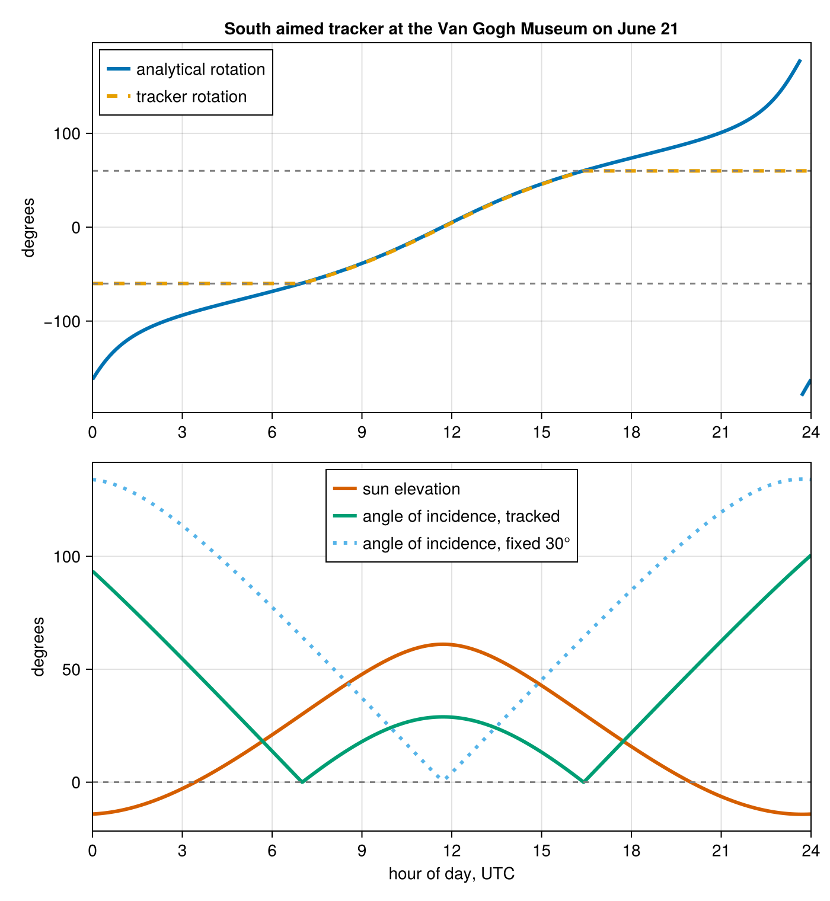

Automatic Differentiation
The Observer{T} element type is only constrained to Real, so dual numbers flow through every algorithm and solar positions are differentiable with ForwardDiff.jl. No extension package is needed. This gives exact derivatives of elevation or azimuth with respect to latitude, longitude, and altitude, which is useful for tracker and panel orientation optimization. See the Numeric Precision guide for the supported number types themselves.
using SolarPosition
using Dates
using ForwardDiff
dt = DateTime(2024, 6, 21, 12, 0, 0)
grad = ForwardDiff.gradient(
x -> solar_position(Observer(x[1], x[2]), dt, SPA(), NoRefraction()).elevation,
[45.0, 10.0],
)2-element Vector{Float64}:
-0.9209770850903363
-0.2755706865807749Gradients also pass through refraction models, and nested duals give second derivatives. Time is a DateTime, not a number, so derivatives with respect to time are not available through this route. Differentiate through a wrapper that maps a number to a DateTime if you need them.
A refraction model's own parameters are differentiable inputs too. The model types and the result types promote, so a dual valued pressure needs no change to the observer:
ForwardDiff.derivative(
p -> solar_position(Observer(45.0, 10.0), dt, PSA(), HUGHES(p, 10.0)).apparent_elevation,
101325.0,
) # degrees of apparent elevation per pascal6.732119552420794e-8Interpolated differentiates as well. Its interpolants cover only the geocentric quantities, which depend on time alone, so the duals travel through the topocentric half it shares with the wrapped algorithm and the derivatives match that algorithm's to roundoff.
DifferentiationInterface
Because the differentiability comes from the code being generic rather than from any AD specific hooks, backend agnostic tooling composes with it out of the box. DifferentiationInterface.jl lets you write the gradient call once and swap the backend freely. Here the ForwardDiff and finite difference backends agree to the finite difference accuracy:
import DifferentiationInterface as DI
import FiniteDiff
f(x) = solar_position(Observer(x[1], x[2]), dt, SPA(), NoRefraction()).elevation
g_ad = DI.gradient(f, DI.AutoForwardDiff(), [45.0, 10.0])
g_num = DI.gradient(f, DI.AutoFiniteDiff(), [45.0, 10.0])
(g_ad, maximum(abs.(g_ad .- g_num)))([-0.9209770850903363, -0.2755706865807749], 1.9860470068522318e-7)Example: optimizing a solar panel orientation
Gradient ascent on a plane-of-array irradiance proxy finds the best fixed tilt and azimuth for a site. The objective sums the cosine of the angle of incidence over one year of solar positions whenever the sun is up:
obs = Observer(45.0, 10.0)
times = collect(DateTime(2024, 1, 1):Hour(1):DateTime(2024, 12, 31))
year = solar_position(obs, times, PSA(), NoRefraction())
function annual_irradiance(angles)
tilt, panel_azimuth = angles
total = zero(eltype(angles))
for p in year
p.elevation > 0 || continue
cos_aoi = cosd(p.zenith) * cosd(tilt) +
sind(p.zenith) * sind(tilt) * cosd(p.azimuth - panel_azimuth)
total += max(zero(cos_aoi), cos_aoi)
end
return total
end
function optimize(x)
for _ in 1:100
g = ForwardDiff.gradient(annual_irradiance, x)
x = x + g / sqrt(sum(abs2, g))
end
return x
end
best = optimize([10.0, 150.0])
round.(best; digits = 1)2-element Vector{Float64}:
40.9
181.5The result lands near the textbook rule of thumb for the site at 45°N: tilt a little below the latitude, facing just about due south, and it collects roughly 31 % more annual irradiance than a flat panel.
Example: a horizontal single axis tracker
A horizontal single axis tracker rotates the panel about a horizontal axis to follow the sun east to west. The rotation angle is closed form, so the interesting free parameter is the azimuth of the axis itself, which field layouts do not always allow to be perfectly north to south. The rotation is limited to ±60°, a typical hardware range, and clamp differentiates fine:
function cos_aoi_tracked(p, axis_azimuth; limit = 60.0)
R = clamp(atand(tand(p.zenith) * sind(p.azimuth - axis_azimuth)), -limit, limit)
panel_azimuth = axis_azimuth + (R < 0 ? -90 : 90)
return cosd(p.zenith) * cosd(R) +
sind(p.zenith) * sind(abs(R)) * cosd(p.azimuth - panel_azimuth)
end
daylight = [p for p in year if p.elevation > 0]
tracked(axis) = sum(max(zero(axis), cos_aoi_tracked(p, axis)) for p in daylight)
function optimize_axis(x)
for i in 1:40
g = ForwardDiff.derivative(tracked, x)
x += g / abs(g) * max(0.1, 40.0 / (i + 10))
end
return x
end
axis = optimize_axis(150.0)
(axis = round(axis; digits = 1), gain_vs_fixed = round(tracked(axis) / annual_irradiance(best); digits = 3))(axis = 180.0, gain_vs_fixed = 1.383)The optimum is a true north to south axis, and the tracker collects roughly 38 % more annual irradiance than the best fixed panel from the previous example.
One day of tracker operation
A full day makes the behaviour concrete: the Van Gogh Museum in Amsterdam, tracker axis aimed due south, negative rotation facing the panel east.
Start with the sun's position at one minute resolution across the whole day.
using CairoMakie
vgm = Observer(52.35888, 4.88185; altitude = 100.0)
axis_south = 180.0
day = collect(DateTime(2024, 6, 21):Minute(1):DateTime(2024, 6, 22))
day_pos = solar_position(vgm, day, PSA(), NoRefraction())
hours = [Dates.value(t - day[1]) / 3_600_000 for t in day]
elevation = [p.elevation for p in day_pos]The tracker rotation, clamped to ±60° and held at its sunrise and sunset angles overnight.
rot(p) = clamp(atand(tand(p.zenith) * sind(p.azimuth - axis_south)), -60.0, 60.0)
sunup = [p.elevation > 0 for p in day_pos]
first_up, last_up = findfirst(sunup), findlast(sunup)
rotation = [rot(day_pos[clamp(i, first_up, last_up)]) for i in eachindex(day_pos)]The angle between the sun and the panel normal, for the tracker and for a fixed reference panel at 30° tilt facing south.
function cos_aoi(p, R, axis_azimuth)
panel_azimuth = axis_azimuth + (R < 0 ? -90 : 90)
return cosd(p.zenith) * cosd(R) +
sind(p.zenith) * sind(abs(R)) * cosd(p.azimuth - panel_azimuth)
end
aoi = [acosd(clamp(cos_aoi(p, R, axis_south), -1, 1)) for (p, R) in zip(day_pos, rotation)]
aoi_fixed = [
acosd(clamp(cosd(p.zenith) * cosd(30) + sind(p.zenith) * sind(30) * cosd(p.azimuth - 180), -1, 1))
for p in day_pos
]The analytical ideal, from the solstice declination, latitude, and hour angle alone, ignoring the equation of time. A NaN marks where it wraps at ±180°.
decl = 23.437
lat, lon = vgm.latitude, vgm.longitude
omega = [15 * (h - 12) + lon for h in hours]
analytical = [
atand(cosd(decl) * sind(w), cosd(lat) * cosd(decl) * cosd(w) + sind(lat) * sind(decl))
for w in omega
]
for i in eachindex(analytical)[2:end]
abs(analytical[i] - analytical[i - 1]) > 180 && (analytical[i - 1] = NaN)
endFinally the figure, rotation above and angles below.
# colorblind safe hues from the Wong palette, validated for each within panel group
blue, orange, green, vermilion, skyblue = "#0072B2", "#E69F00", "#009E73", "#D55E00", "#56B4E9"
fig = Figure(size = (700, 760))
ax1 = Axis(fig[1, 1]; ylabel = "degrees", xticks = 0:3:24,
title = "South aimed tracker at the Van Gogh Museum on June 21")
lines!(ax1, hours, analytical; color = blue, linewidth = 3, label = "analytical rotation")
lines!(
ax1, hours, rotation;
color = orange, linewidth = 3, linestyle = :dash, label = "tracker rotation",
)
hlines!(ax1, [-60, 60]; linestyle = :dash, color = :gray)
xlims!(ax1, 0, 24)
axislegend(ax1; position = :lt)
ax2 = Axis(fig[2, 1]; xlabel = "hour of day, UTC", ylabel = "degrees", xticks = 0:3:24)
lines!(ax2, hours, elevation; color = vermilion, linewidth = 3, label = "sun elevation")
lines!(ax2, hours, aoi; color = green, linewidth = 3, label = "angle of incidence, tracked")
lines!(
ax2, hours, aoi_fixed;
color = skyblue, linewidth = 3, linestyle = :dot, label = "angle of incidence, fixed 30°",
)
hlines!(ax2, [0]; linestyle = :dash, color = :gray)
xlims!(ax2, 0, 24)
axislegend(ax2; position = :ct)
fig
Three things to read from it. The tracker rotation lies exactly on the analytical curve until the ±60° limits cut it off, while the ideal keeps following the sun below the horizon and wraps when it passes due north. The tracked angle of incidence touches zero exactly when the sun crosses due east and due west, the only moments the sun lies in the tracker's rotation plane, and its local maximum at noon equals the solar zenith because the panel is flat then. The fixed panel beats the tracker around midday, since a horizontal axis cannot tilt the panel south; recovering that noon deficit is why tilted single axis trackers exist.